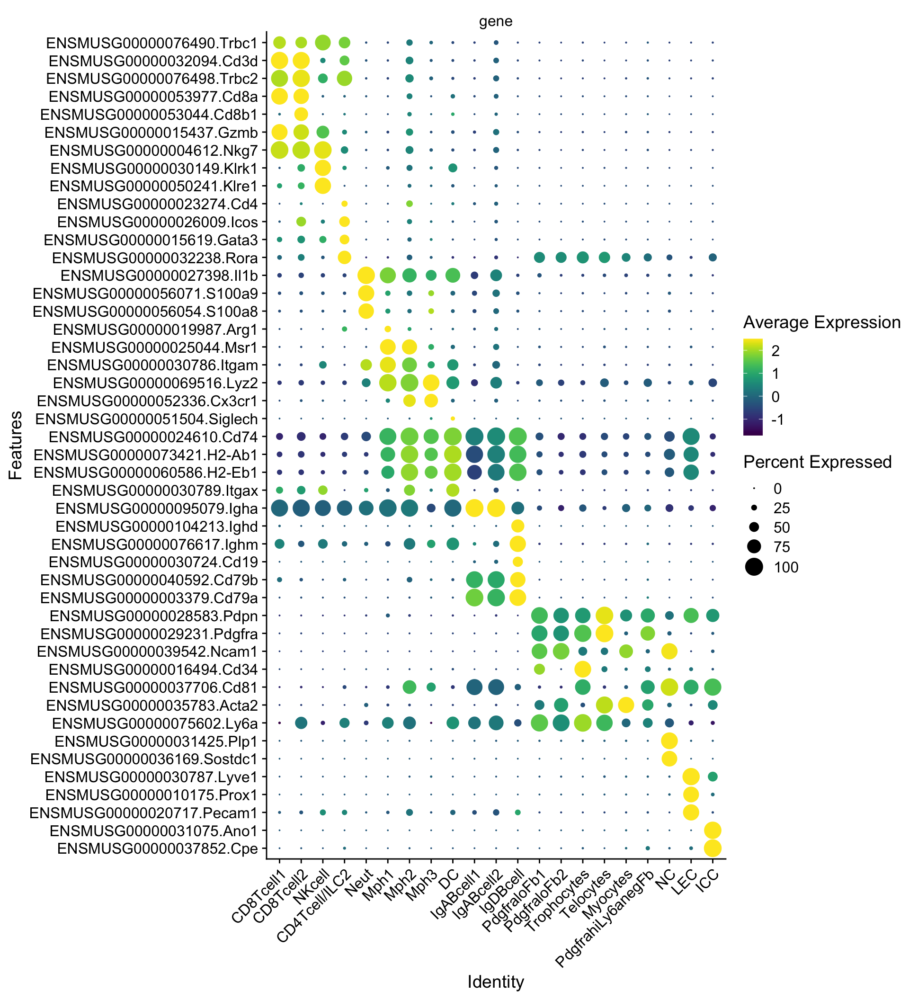
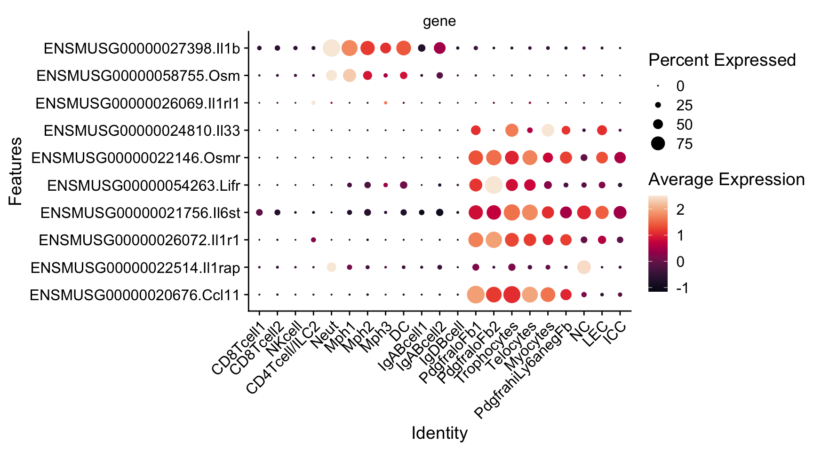
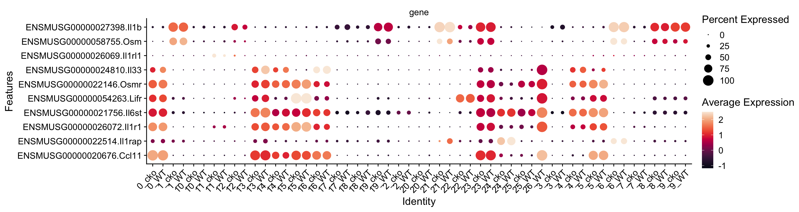

Cxcl13HpbGranuloma
A.DeMartin
2024-02-21
Last updated: 2024-11-07
Checks: 5 2
Knit directory: Cxcl13Hpb/
This reproducible R Markdown analysis was created with workflowr (version 1.7.1). The Checks tab describes the reproducibility checks that were applied when the results were created. The Past versions tab lists the development history.
The R Markdown file has unstaged changes. To know which version of
the R Markdown file created these results, you’ll want to first commit
it to the Git repo. If you’re still working on the analysis, you can
ignore this warning. When you’re finished, you can run
wflow_publish to commit the R Markdown file and build the
HTML.
Great job! The global environment was empty. Objects defined in the global environment can affect the analysis in your R Markdown file in unknown ways. For reproduciblity it’s best to always run the code in an empty environment.
The command set.seed(20240311) was run prior to running
the code in the R Markdown file. Setting a seed ensures that any results
that rely on randomness, e.g. subsampling or permutations, are
reproducible.
Great job! Recording the operating system, R version, and package versions is critical for reproducibility.
Nice! There were no cached chunks for this analysis, so you can be confident that you successfully produced the results during this run.
Using absolute paths to the files within your workflowr project makes it difficult for you and others to run your code on a different machine. Change the absolute path(s) below to the suggested relative path(s) to make your code more reproducible.
| absolute | relative |
|---|---|
| /Users/immbio/Desktop/Project/Angelina/Cxcl13Hpb/data/dataJuli2022/ | data/dataJuli2022 |
| /Users/immbio/Desktop/Project/Angelina/Cxcl13Hpb/data/dataJuli2021/ | data/dataJuli2021 |
| /Users/immbio/Desktop/Project/Angelina/Cxcl13Hpb/data/merged_allgranuloma_wofilter_seurat.rds | data/merged_allgranuloma_wofilter_seurat.rds |
| /Users/immbio/Desktop/Project/Angelina/Cxcl13Hpb/data/merged_allgranuloma_wofilter_seurat_wocl21.rds | data/merged_allgranuloma_wofilter_seurat_wocl21.rds |
| /Users/immbio/Desktop/Project/Angelina/Cxcl13Hpb/analysis/markergenes_cluster_name | analysis/markergenes_cluster_name |
Great! You are using Git for version control. Tracking code development and connecting the code version to the results is critical for reproducibility.
The results in this page were generated with repository version 4a5925d. See the Past versions tab to see a history of the changes made to the R Markdown and HTML files.
Note that you need to be careful to ensure that all relevant files for
the analysis have been committed to Git prior to generating the results
(you can use wflow_publish or
wflow_git_commit). workflowr only checks the R Markdown
file, but you know if there are other scripts or data files that it
depends on. Below is the status of the Git repository when the results
were generated:
Ignored files:
Ignored: .DS_Store
Ignored: .Rhistory
Ignored: .Rproj.user/
Ignored: analysis/.DS_Store
Ignored: analysis/.Rhistory
Ignored: analysis/venn-4-diagram.png
Ignored: data/dataJuli2021/
Ignored: data/dataJuli2022/
Ignored: data/dataJune2019/
Ignored: data/dataSept2020/
Untracked files:
Untracked: VennDiagram.2024-10-31_11-39-59.947645.log
Untracked: VennDiagram.2024-10-31_11-40-00.051591.log
Untracked: VennDiagram.2024-11-05_10-11-25.44274.log
Untracked: VennDiagram.2024-11-05_10-11-25.547813.log
Untracked: VennDiagram.2024-11-06_15-24-54.279223.log
Untracked: VennDiagram.2024-11-06_15-24-54.452047.log
Untracked: VennDiagram.2024-11-06_17-12-48.197799.log
Untracked: VennDiagram.2024-11-06_17-12-48.395735.log
Untracked: VennDiagram.2024-11-07_10-08-58.750646.log
Untracked: VennDiagram.2024-11-07_10-08-58.9271.log
Untracked: analysis/All Fb for collab.Rmd
Untracked: analysis/DEGenesD4cond2.txt
Untracked: analysis/DEGenesD4cond3.txt
Untracked: analysis/DEGenesFbcond3.txt
Untracked: analysis/VennDiagram.2024-10-31_10-50-52.974723.log
Untracked: analysis/VennDiagram.2024-10-31_10-50-53.217425.log
Untracked: analysis/VennDiagram.2024-10-31_10-57-36.962004.log
Untracked: analysis/VennDiagram.2024-10-31_10-57-37.222721.log
Untracked: analysis/VennDiagram.2024-11-05_17-55-53.319942.log
Untracked: analysis/VennDiagram.2024-11-05_17-56-51.857181.log
Untracked: analysis/VennDiagram.2024-11-05_17-58-51.041464.log
Untracked: analysis/VennDiagram.2024-11-05_18-11-03.857729.log
Untracked: analysis/VennDiagram.2024-11-05_18-11-04.444298.log
Untracked: analysis/VennDiagram.2024-11-05_18-11-23.73444.log
Untracked: analysis/VennDiagram.2024-11-05_18-11-47.701381.log
Untracked: analysis/VennDiagram.2024-11-05_18-12-32.811219.log
Untracked: analysis/VennDiagram.2024-11-06_09-49-15.442491.log
Untracked: analysis/VennDiagram.2024-11-06_09-49-15.722922.log
Untracked: analysis/venn-4-diagram.png.2024-10-31_10-50-52.235534.log
Untracked: analysis/venn-4-diagram.png.2024-10-31_10-57-36.682727.log
Untracked: analysis/venn-4-diagram.png.2024-11-05_17-55-44.5672.log
Untracked: analysis/venn-4-diagram.png.2024-11-05_17-56-50.692121.log
Untracked: analysis/venn-4-diagram.png.2024-11-05_18-11-02.553084.log
Untracked: analysis/venn-4-diagram.png.2024-11-05_18-11-45.645438.log
Untracked: analysis/venn-4-diagram.png.2024-11-06_09-49-15.110858.log
Untracked: venn-4-diagram.png
Untracked: venn-4-diagram.png.2024-10-31_11-39-59.707438.log
Untracked: venn-4-diagram.png.2024-11-05_10-11-25.152376.log
Untracked: venn-4-diagram.png.2024-11-06_15-24-53.969918.log
Untracked: venn-4-diagram.png.2024-11-06_17-12-47.831621.log
Untracked: venn-4-diagram.png.2024-11-07_10-08-58.426677.log
Unstaged changes:
Modified: analysis/DEGenesFbcond2.txt
Modified: analysis/FbmarkerGenesclustername.txt
Modified: analysis/FibroblastAnalysis.Rmd
Modified: analysis/FibroblastAnalysisDEgenes.Rmd
Modified: analysis/GranulomaAnalysis.Rmd
Note that any generated files, e.g. HTML, png, CSS, etc., are not included in this status report because it is ok for generated content to have uncommitted changes.
These are the previous versions of the repository in which changes were
made to the R Markdown (analysis/GranulomaAnalysis.Rmd) and
HTML (docs/GranulomaAnalysis.html) files. If you’ve
configured a remote Git repository (see ?wflow_git_remote),
click on the hyperlinks in the table below to view the files as they
were in that past version.
| File | Version | Author | Date | Message |
|---|---|---|---|---|
| Rmd | 4a5925d | angeldemartin | 2024-09-18 | Sept18-24 |
| html | ec7c6be | angeldemartin | 2024-06-12 | update website2 |
| Rmd | 8b7712d | angeldemartin | 2024-06-12 | update website |
load packages
pre processing
load files and merge
##load objects juli2022 and merge all
basedir <- "/Users/immbio/Desktop/Project/Angelina/Cxcl13Hpb/data/dataJuli2022/"
fileNamList <- list.files(path = basedir)
for(i in 1:length(fileNamList)){
seuratS <- readRDS(paste0(basedir, fileNamList[i]))
if(exists("seuratN")){
seuratN <- merge(x = seuratN, y = seuratS)
}else{
seuratN <- seuratS
}
}
remove(seuratS)
table(seuratN$dataset)
##load objects juli 2021 and merge all
basedir <- "/Users/immbio/Desktop/Project/Angelina/Cxcl13Hpb/data/dataJuli2021/"
fileNamList <- list.files(path = basedir)
for(i in 1:length(fileNamList)){
seuratS <- readRDS(paste0(basedir, fileNamList[i]))
if(exists("seuratN")){
seuratN <- merge(x = seuratN, y = seuratS)
}else{
seuratN <- seuratS
}
}
remove(seuratS)
seuratM <- seuratN
remove(seuratN)
table(seuratM$dataset)
#rerun seurat
seuratM <- NormalizeData (object = seuratM)
seuratM <- FindVariableFeatures(object = seuratM)
seuratM <- ScaleData(object = seuratM, verbose = TRUE)
seuratM <- RunPCA(object=seuratM, npcs = 30, verbose = FALSE)
seuratM <- RunTSNE(object=seuratM, reduction="pca", dims = 1:20)
seuratM <- RunUMAP(object=seuratM, reduction="pca", dims = 1:20)
seuratM <- FindNeighbors(object = seuratM, reduction = "pca", dims= 1:20)
res <- c(0.25, 0.6, 0.8, 0.4)
for (i in 1:length(res)) {
seuratM <- FindClusters(object = seuratM, resolution = res[i], random.seed = 1234)
}
### save seurat object
saveRDS(seuratM, file="/Users/immbio/Desktop/Project/Angelina/Cxcl13Hpb/data/merged_allgranuloma_wofilter_seurat.rds")
### remove cluster 21 (0.25res) LEC/fb doublets
### check counts detected
seuratLEC <- subset(seurat, RNA_snn_res.0.25 =="21")
sce <- as.SingleCellExperiment(seuratLEC)
plotQC2 <- function(sce, feature){
p <- gghistogram(data = as.data.frame(sce@colData),
x=feature,
bins=70,
#title=unique(sce$dataset),
fill = "slategray",
legend = "right", color= "black")
return(p)
}
plotQC2(sce, "total")
plotQC2(sce, "detected")
##remove
table(seurat$RNA_snn_res.0.25)
seurat1 <- subset(seurat, RNA_snn_res.0.25 == "21", invert = TRUE)
table(seurat1$RNA_snn_res.0.25)
### save seurat object
saveRDS(seurat, file="/Users/immbio/Desktop/Project/Angelina/Cxcl13Hpb/data/merged_allgranuloma_wofilter_seurat_wocl21.rds")add metadata
### add any type of metadata
#### cluster_name
seurat$cluster_name <- "cluster_name"
seurat$cluster_name[which(seurat$RNA_snn_res.0.25 %in% "0" )] <- "PdgfraloFb1"
seurat$cluster_name[which(seurat$RNA_snn_res.0.25 %in% "1" )] <- "Mph1"
seurat$cluster_name[which(seurat$RNA_snn_res.0.25 %in% "2" )] <- "CD8Tcell1"
seurat$cluster_name[which(seurat$RNA_snn_res.0.25 %in% "3" )] <- "Neut"
seurat$cluster_name[which(seurat$RNA_snn_res.0.25 %in% "4" )] <- "IgABcell1"
seurat$cluster_name[which(seurat$RNA_snn_res.0.25 %in% "5" )] <- "LEC"
seurat$cluster_name[which(seurat$RNA_snn_res.0.25 %in% "6" )] <- "Telocytes"
seurat$cluster_name[which(seurat$RNA_snn_res.0.25 %in% "7" )] <- "DC"
seurat$cluster_name[which(seurat$RNA_snn_res.0.25 %in% "8" )] <- "CD4Tcell/ILC2"
seurat$cluster_name[which(seurat$RNA_snn_res.0.25 %in% "9" )] <- "Mph2"
seurat$cluster_name[which(seurat$RNA_snn_res.0.25 %in% "10" )] <- "NKcell"
seurat$cluster_name[which(seurat$RNA_snn_res.0.25 %in% "11" )] <- "CD8Tcell2"
seurat$cluster_name[which(seurat$RNA_snn_res.0.25 %in% "12" )] <- "Mph3"
seurat$cluster_name[which(seurat$RNA_snn_res.0.25 %in% "13" )] <- "Trophocytes"
seurat$cluster_name[which(seurat$RNA_snn_res.0.25 %in% "14" )] <- "PdgfrahiLy6anegFb"
seurat$cluster_name[which(seurat$RNA_snn_res.0.25 %in% "15" )] <- "IgABcell2"
seurat$cluster_name[which(seurat$RNA_snn_res.0.25 %in% "16" )] <- "Myocytes"
seurat$cluster_name[which(seurat$RNA_snn_res.0.25 %in% "17" )] <- "PdgfraloFb2"
seurat$cluster_name[which(seurat$RNA_snn_res.0.25 %in% "18" )] <- "IgDBcell"
seurat$cluster_name[which(seurat$RNA_snn_res.0.25 %in% "19" )] <- "NC"
seurat$cluster_name[which(seurat$RNA_snn_res.0.25 %in% "20" )] <- "ICC"
table(seurat$cluster_name)
table(seurat$RNA_snn_res.0.25)
###order
Idents(seurat) <- seurat$cluster_name
seurat$cluster_name <- factor(seurat$cluster_name, levels=c("CD8Tcell1","CD8Tcell2","NKcell", "CD4Tcell/ILC2","Neut", "Mph1","Mph2", "Mph3","DC","IgABcell1","IgABcell2","IgDBcell","PdgfraloFb1","PdgfraloFb2", "Trophocytes", "Telocytes", "Myocytes", "PdgfrahiLy6anegFb", "NC", "LEC", "ICC"))
Idents(seurat) <- seurat$cluster_name
table(seurat$cluster_name)
### add slot cluster plus cond2
seurat$cluster_plus_cond2 <- paste0(seurat$seurat_clusters, '_', seurat$cond2)
#### cond2
WT <- c("o289411_1-1_20220629_Mu_granuloma_Cxcl13Cre_CD45_HpD4_v3","o289411_2-2_20220629_Mu_granuloma_Cxcl13Cre_FSC_HpD4_v3","9_20210624_Mu_granuloma_Cxcl13Cre_EYFP_HpD4_v3")
cko <- c("o289411_3-3_20220629_Mu_granuloma_Cxcl13Cre_IL33fl_CD45_HpD4_v3","o289411_4-4_20220629_Mu_granuloma_Cxcl13Cre_IL33fl_FSC_HpD4_v3","10_20210624_Mu_granuloma_Cxcl13Cre_IL33flf_EYFP_HpD4_v3")
seurat$cond2 <- "cond2"
seurat$cond2[which(seurat$dataset %in% WT)] <- "WT"
seurat$cond2[which(seurat$dataset %in% cko)] <- "cko"
table(seurat$cond2)
###order
Idents(seurat) <- seurat$cond2
seurat$cond2 <- factor(seurat$cond2, levels=c("WT", "cko"))
Idents(seurat) <- seurat$cond2
table(seurat$cond2)
### save seurat object
saveRDS(seurat, file="/Users/immbio/Desktop/Project/Angelina/Cxcl13Hpb/data/merged_allgranuloma_wofilter_seurat_wocl21.rds")end pre processing
load merged file granuloma
##load merged file
fileNam <- "/Users/immbio/Desktop/Project/Angelina/Cxcl13Hpb/data/merged_allgranuloma_wofilter_seurat_wocl21.rds"
seurat <- readRDS(fileNam)
table(seurat$dataset)
10_20210624_Mu_granuloma_Cxcl13Cre_IL33flf_EYFP_HpD4_v3
5988
9_20210624_Mu_granuloma_Cxcl13Cre_EYFP_HpD4_v3
4278
o289411_1-1_20220629_Mu_granuloma_Cxcl13Cre_CD45_HpD4_v3
8013
o289411_2-2_20220629_Mu_granuloma_Cxcl13Cre_FSC_HpD4_v3
3008
o289411_3-3_20220629_Mu_granuloma_Cxcl13Cre_IL33fl_CD45_HpD4_v3
6909
o289411_4-4_20220629_Mu_granuloma_Cxcl13Cre_IL33fl_FSC_HpD4_v3
6472 table(seurat$RNA_snn_res.0.25)
0 1 2 3 4 5 6 7 8 9 10 11 12 13 14 15 16 17 18 19
4607 4144 3007 2477 2382 2201 2173 2048 1944 1766 1502 1137 870 848 798 766 653 639 357 180
20 21
169 0 table(seurat$orig.ident)
34668 set color vectors
### col clustername
colclustername <- c("#355C7D","#B1746FFF","#202547","#B09C85", "#4e5a4c","#53354A","#2A363B","#8491B4FF","#00A087FF","#DC9989","#84ad83", "#628395","#D33B44","#779d8d","#727077","#868686FF","#F8B195","#FF847C","#725663FF","#904D39","#91D1C2")
names(colclustername) <- c("PdgfraloFb1","Mph1", "CD8Tcell1","Neut", "IgABcell1", "LEC", "Telocytes", "DC", "CD4Tcell/ILC2", "Mph2", "NKcell", "CD8Tcell2", "Mph3", "Trophocytes", "PdgfrahiLy6anegFb", "IgABcell2", "Myocytes", "PdgfraloFb2", "IgDBcell", "NC", "ICC")
### col cond2
colcond2 <- c("#202547","#BE3144")
names(colcond2) <- c("WT", "cko")umaps clustername
### umaps
Idents(seurat) <- seurat$cluster_name
DimPlot(seurat, reduction = "umap", cols = colclustername)
| Version | Author | Date |
|---|---|---|
| ec7c6be | angeldemartin | 2024-06-12 |
DimPlot(seurat, reduction = "umap", cols = colclustername) + theme(legend.position = "none")
| Version | Author | Date |
|---|---|---|
| ec7c6be | angeldemartin | 2024-06-12 |
DimPlot(seurat, reduction = "umap", cols = colclustername, pt.size = 0.5) + theme(legend.position = "none")
| Version | Author | Date |
|---|---|---|
| ec7c6be | angeldemartin | 2024-06-12 |
DimPlot(seurat, reduction = "umap", cols = colclustername, pt.size = 1) + theme(legend.position = "none")
| Version | Author | Date |
|---|---|---|
| ec7c6be | angeldemartin | 2024-06-12 |
DimPlot(seurat, reduction = "umap", cols = colclustername) + theme(legend.position = "none") ## umaps condition
## umaps condition
### umaps
Idents(seurat) <- seurat$cond2
DimPlot(seurat, reduction = "umap", cols = colcond2, split.by = "cond2")
| Version | Author | Date |
|---|---|---|
| ec7c6be | angeldemartin | 2024-06-12 |
DimPlot(seurat, reduction = "umap", cols = colcond2, order = "WT")
| Version | Author | Date |
|---|---|---|
| ec7c6be | angeldemartin | 2024-06-12 |
DimPlot(seurat, reduction = "umap", cols = colcond2, order="WT") + theme(legend.position = "none")
| Version | Author | Date |
|---|---|---|
| ec7c6be | angeldemartin | 2024-06-12 |
DimPlot(seurat, reduction = "umap", pt.size = 0.5, cols = colcond2, order="WT") + theme(legend.position = "none")
| Version | Author | Date |
|---|---|---|
| ec7c6be | angeldemartin | 2024-06-12 |
DimPlot(seurat, reduction = "umap", pt.size = 1, cols = colcond2, order="WT") + theme(legend.position = "none")
| Version | Author | Date |
|---|---|---|
| ec7c6be | angeldemartin | 2024-06-12 |
DimPlot(seurat, reduction = "umap", cols = colcond2, order="WT") + theme(legend.position = "none")
DimPlot(seurat, reduction = "umap", cols = colcond2) + theme(legend.position = "none")
### calculate cluster marker genes
Idents(seurat) <- seurat$cluster_name
levels(seurat)
markerGenes <- FindAllMarkers(seurat, only.pos=T) %>%
dplyr::filter(p_val_adj < 0.01)
write.table(markerGenes,
file= "/Users/immbio/Desktop/Project/Angelina/Cxcl13Hpb/analysis/markergenes_cluster_name",
sep="\t",
quote=F,
row.names=F,
col.names=T)dotplot cluster marker
genes <- data.frame(gene=rownames(seurat)) %>%
mutate(geneID=gsub("^.*\\.", "", gene))
selGenes <- data.frame(geneID=c("Cpe","Ano1","Pecam1","Prox1","Lyve1","Sostdc1","Plp1","Ly6a","Acta2","Cd81","Cd34","Ncam1","Pdgfra","Pdpn", "Cd79a", "Cd79b", "Cd19", "Ighm", "Ighd", "Igha","Itgax","H2-Eb1","H2-Ab1","Cd74","Siglech", "Cx3cr1","Lyz2","Itgam","Msr1", "Arg1", "S100a8", "S100a9", "Il1b", "Rora", "Gata3", "Icos", "Cd4", "Klre1", "Klrk1", "Nkg7", "Gzmb","Cd8b1","Cd8a", "Trbc2", "Cd3d", "Trbc1")) %>% left_join(., genes, by="geneID")
DotPlot(seurat, features = selGenes, group.by= "cluster_name") + RotatedAxis() + scale_color_viridis(option="E") + coord_flip()
| Version | Author | Date |
|---|---|---|
| ec7c6be | angeldemartin | 2024-06-12 |
dotplot3
genes <- data.frame(gene=rownames(seurat)) %>%
mutate(geneID=gsub("^.*\\.", "", gene))
selGenes <- data.frame(geneID=c("Ccl11","Il1rap","Il1r1","Il6st","Lifr","Osmr", "Il33", "Il1rl1", "Osm", "Il1b")) %>% left_join(., genes, by="geneID")
DotPlot(seurat, features = selGenes, group.by= "cluster_name") + RotatedAxis() + scale_color_viridis(option="F") + coord_flip() ### dotplot2
genes <- data.frame(gene=rownames(seurat)) %>%
mutate(geneID=gsub("^.*\\.", "", gene))
selGenes <- data.frame(geneID=c("Ccl11","Il1rap","Il1r1","Il6st","Lifr","Osmr", "Il33", "Il1rl1", "Osm", "Il1b")) %>% left_join(., genes, by="geneID")
DotPlot(seurat, features = selGenes, group.by= "cluster_plus_cond2") + RotatedAxis() + scale_color_viridis(option="F") + coord_flip()
subset CD45 negatives
##subset CD45- cells
seuratCD45neg <- subset(seurat, cluster_name %in% c("PdgfraloFb1","PdgfraloFb2", "Trophocytes", "Telocytes", "Myocytes", "PdgfrahiLy6anegFb", "NC", "LEC", "ICC"))
table(seuratCD45neg$cluster_name)
CD8Tcell1 CD8Tcell2 NKcell CD4Tcell/ILC2 Neut
0 0 0 0 0
Mph1 Mph2 Mph3 DC IgABcell1
0 0 0 0 0
IgABcell2 IgDBcell PdgfraloFb1 PdgfraloFb2 Trophocytes
0 0 4607 639 848
Telocytes Myocytes PdgfrahiLy6anegFb NC LEC
2173 653 798 180 2201
ICC
169 average Heatmap - Fb top5 cluster marker stroma
##order
Idents(seuratCD45neg) <- seuratCD45neg$cluster_name
levels(seuratCD45neg)[1] "PdgfraloFb1" "PdgfraloFb2" "Trophocytes" "Telocytes"
[5] "Myocytes" "PdgfrahiLy6anegFb" "NC" "LEC"
[9] "ICC" avgHeatmap <- function(seuratCD45neg, selGenes, colVecIdent, colVecCond=NULL,
ordVec=NULL, gapVecR=NULL, gapVecC=NULL,cc=FALSE,
cr=FALSE, condCol=FALSE){
selGenes <- selGenes$gene
## assay data
clusterAssigned <- as.data.frame(Idents(seuratCD45neg)) %>%
dplyr::mutate(cell=rownames(.))
colnames(clusterAssigned)[1] <- "ident"
seuratDat <- GetAssayData(seuratCD45neg)
## genes of interest
genes <- data.frame(gene=rownames(seuratCD45neg)) %>%
mutate(geneID=gsub("^.*\\.", "", gene)) %>% filter(geneID %in% selGenes)
## matrix with averaged cnts per ident
logNormExpres <- as.data.frame(t(as.matrix(
seuratDat[which(rownames(seuratDat) %in% genes$gene),])))
logNormExpres <- logNormExpres %>% dplyr::mutate(cell=rownames(.)) %>%
dplyr::left_join(.,clusterAssigned, by=c("cell")) %>%
dplyr::select(-cell) %>% dplyr::group_by(ident) %>%
dplyr::summarise_all(mean)
logNormExpresMa <- logNormExpres %>% dplyr::select(-ident) %>% as.matrix()
rownames(logNormExpresMa) <- logNormExpres$ident
logNormExpresMa <- t(logNormExpresMa)
rownames(logNormExpresMa) <- gsub("^.*?\\.","",rownames(logNormExpresMa))
## remove genes if they are all the same in all groups
ind <- apply(logNormExpresMa, 1, sd) == 0
logNormExpresMa <- logNormExpresMa[!ind,]
genes <- genes[!ind,]
## color columns according to cluster
annotation_col <- as.data.frame(gsub("(^.*?_)","",
colnames(logNormExpresMa)))%>%
dplyr::mutate(celltype=gsub("(_.*$)","",colnames(logNormExpresMa)))
colnames(annotation_col)[1] <- "col1"
annotation_col <- annotation_col %>%
dplyr::mutate(cond = gsub("(^[0-9]_?)","",col1)) %>%
dplyr::select(cond, celltype)
rownames(annotation_col) <- colnames(logNormExpresMa)
ann_colors = list(
cond = colVecCond,
celltype=colclustername)
if(is.null(ann_colors$cond)){
annotation_col$cond <- NULL
}
## adjust order
logNormExpresMa <- logNormExpresMa[selGenes,]
if(is.null(ordVec)){
ordVec <- levels(seuratCD45neg)
}
logNormExpresMa <- logNormExpresMa[,ordVec]
## scaled row-wise
pheatmap(logNormExpresMa, scale="row" ,treeheight_row = 0, cluster_rows = cr,
cluster_cols = cc,
color = colorRampPalette(c("#2166AC", "#F7F7F7", "#B2182B"))(50),
annotation_col = annotation_col, cellwidth=15, cellheight=10,
annotation_colors = ann_colors, gaps_row = gapVecR, gaps_col = gapVecC)
}
genesPlot <- data.frame(gene=c("Sfrp1", "Clec3b", "Fbln1", "Adamdec1", "C4b", "P2rx1", "Itga8", "Fgfr2", "Cxcl14", "Tmem178", "Cpxm1", "Ccdc80", "Cd34", "Ogn", "Lgi2", "Bmp5", "Tagln", "Tmem158", "Col4a5", "Smoc2", "Myh11", "Actg2", "Acta2", "Myl9", "Tpm2", "Ptn", "Rgs5", "Dpt", "Lum", "Timp1", "Plp1", "Lgi4", "Cryab", "Sostdc1", "Postn", "Mmrn1", "Flt4", "Egfl7", "Lyve1", "Aqp1", "Cpe", "Ano1", "Pde3a", "Pcp4l1", "Grem2"))
levels(seuratCD45neg)[1] "PdgfraloFb1" "PdgfraloFb2" "Trophocytes" "Telocytes"
[5] "Myocytes" "PdgfrahiLy6anegFb" "NC" "LEC"
[9] "ICC" colVec <- colclustername
# colVec <- c(colPal, colPal, colPal)
# colVec <- c("blue", "red")
avgHeatmap(seuratCD45neg, selGenes = genesPlot, colVecIdent = colVec)
relative abundance CD45+
## Abundance plot CD45neg
## make count list
datList <- NULL
for(con in unique(seuratCD45neg$cond2)){
seuratSub <- subset(seuratCD45neg, cond2==con)
print(dim(seuratSub))
dat_con <- as.data.frame(table(seuratSub$cluster_name)) %>%
mutate(percent=Freq/ncol(seuratSub)) %>% mutate(cond=con)
datList[[con]] <- dat_con
}[1] 29085 7497
[1] 29085 4771dat_all <- do.call("rbind", datList)
##order x
ordX <- c("WT", "cko")
## plot abundance
ggbarplot(dat_all, x= "cond", y= "percent", fill = "Var1", legend = "right", legend.titel = "cluster", ylab = "frequency", palette = colclustername) + scale_x_discrete(limits=ordX)
| Version | Author | Date |
|---|---|---|
| ec7c6be | angeldemartin | 2024-06-12 |
relative abundance CD45-
##subset CD45+ cells
seuratCD45pos <- subset(seurat, cluster_name %in% c("CD8Tcell1","CD8Tcell2","NKcell","CD4Tcell/ILC2","Neut","Mph1","Mph2","Mph3","DC","IgABcell1","IgABcell2","IgDBcell"))
table(seuratCD45pos$cluster_name)
CD8Tcell1 CD8Tcell2 NKcell CD4Tcell/ILC2 Neut
3007 1137 1502 1944 2477
Mph1 Mph2 Mph3 DC IgABcell1
4144 1766 870 2048 2382
IgABcell2 IgDBcell PdgfraloFb1 PdgfraloFb2 Trophocytes
766 357 0 0 0
Telocytes Myocytes PdgfrahiLy6anegFb NC LEC
0 0 0 0 0
ICC
0 ## Abundance plot CD45neg
## make count list
datList <- NULL
for(con in unique(seuratCD45pos$cond2)){
seuratSub <- subset(seuratCD45pos, cond2==con)
print(dim(seuratSub))
dat_con <- as.data.frame(table(seuratSub$cluster_name)) %>%
mutate(percent=Freq/ncol(seuratSub)) %>% mutate(cond=con)
datList[[con]] <- dat_con
}[1] 29085 11872
[1] 29085 10528dat_all <- do.call("rbind", datList)
##order x
ordX <- c("WT", "cko")
## plot abundance
ggbarplot(dat_all, x= "cond", y= "percent", fill = "Var1", legend = "right", legend.titel = "cluster", ylab = "frequency", palette = colclustername) + scale_x_discrete(limits=ordX)
| Version | Author | Date |
|---|---|---|
| ec7c6be | angeldemartin | 2024-06-12 |
assign cell types
#### celltype
seurat$celltype <- "celltype"
seurat$celltype[which(seurat$cluster_name %in% c("CD8Tcell1", "CD8Tcell2"))] <- "CD8Tcells"
seurat$celltype[which(seurat$cluster_name %in% c("NKcell"))] <- "NKcells"
seurat$celltype[which(seurat$cluster_name %in% c("CD4Tcell/ILC2"))] <- "CD4Tcell/ILC2"
seurat$celltype[which(seurat$cluster_name %in% c("Neut"))] <- "Neut"
seurat$celltype[which(seurat$cluster_name %in% c("Mph1", "Mph2", "Mph3"))] <- "Macrophages"
seurat$celltype[which(seurat$cluster_name %in% c("DC"))] <- "DC"
seurat$celltype[which(seurat$cluster_name %in% c("IgABcell1","IgABcell2","IgDBcell"))] <- "Bcells"
seurat$celltype[which(seurat$cluster_name %in% c("PdgfraloFb1","PdgfraloFb2", "Trophocytes", "Telocytes", "Myocytes", "PdgfrahiLy6anegFb"))] <- "Fb"
seurat$celltype[which(seurat$cluster_name %in% c("NC"))] <- "NC"
seurat$celltype[which(seurat$cluster_name %in% c("LEC"))] <- "LEC"
seurat$celltype[which(seurat$cluster_name %in% c("ICC"))] <- "ICC"
table(seurat$celltype)
Bcells CD4Tcell/ILC2 CD8Tcells DC Fb ICC LEC
3505 1944 4144 2048 9718 169 2201
Macrophages NC Neut NKcells
6780 180 2477 1502 ###order
Idents(seurat) <- seurat$celltype
seurat$celltype <- factor(seurat$celltype, levels=c("CD8Tcells","NKcells", "CD4Tcell/ILC2","Neut","Macrophages","DC","Bcells", "Fb", "NC", "LEC", "ICC"))
Idents(seurat) <- seurat$celltype
table(seurat$celltype)
CD8Tcells NKcells CD4Tcell/ILC2 Neut Macrophages DC Bcells
4144 1502 1944 2477 6780 2048 3505
Fb NC LEC ICC
9718 180 2201 169 set color vector celltype
### col clustername
colcelltype <- c("#202547","#84ad83","#00A087FF","#B09C85","#D33B44","#8491B4FF", "#4e5a4c","#355C7D","#904D39","#725663FF","#91D1C2")
names(colcelltype) <- c("CD8Tcells","NKcells", "CD4Tcell/ILC2","Neut","Macrophages","DC","Bcells", "Fb", "NC", "LEC", "ICC")celltype umap
### umaps
Idents(seurat) <- seurat$celltype
DimPlot(seurat, reduction = "umap", cols = colcelltype)
| Version | Author | Date |
|---|---|---|
| ec7c6be | angeldemartin | 2024-06-12 |
DimPlot(seurat, reduction = "umap", cols = colcelltype) + theme(legend.position = "none")
| Version | Author | Date |
|---|---|---|
| ec7c6be | angeldemartin | 2024-06-12 |
DimPlot(seurat, reduction = "umap", pt.size = 0.5, cols = colcelltype) + theme(legend.position = "none")
| Version | Author | Date |
|---|---|---|
| ec7c6be | angeldemartin | 2024-06-12 |
DimPlot(seurat, reduction = "umap", pt.size = 1, cols = colcelltype) + theme(legend.position = "none")
| Version | Author | Date |
|---|---|---|
| ec7c6be | angeldemartin | 2024-06-12 |
DE genes for each cell type according to WT/cko
Idents(seurat) <- seurat$cond2
#top 100 DE genes CD8Tcells
seuratCD8Tcells <- subset(seurat, celltype == "CD8Tcells")
table(seuratCD8Tcells$cond2)
WT cko
2183 1961 levels(seuratCD8Tcells)[1] "WT" "cko"DEGenesCD8Tcells <- FindAllMarkers(seuratCD8Tcells,only.pos=T, logfc.threshold = 0.1) %>%
dplyr::filter(p_val_adj < 0.1) %>% mutate(celltype = "CD8Tcells")
DEGenesCD8TcellsWT <- DEGenesCD8Tcells %>% filter (cluster == "WT")
DEGenesCD8TcellsWT100 <- DEGenesCD8TcellsWT %>% top_n(100, avg_log2FC)
DEGenesCD8Tcellscko <- DEGenesCD8Tcells %>% filter (cluster == "cko")
DEGenesCD8Tcellscko100 <- DEGenesCD8Tcellscko %>% top_n(100, avg_log2FC)
DEGenesCD8TcellsWTcko <- FindAllMarkers(seuratCD8Tcells, logfc.threshold = 0.1) %>%
dplyr::filter(p_val_adj < 0.1) %>% mutate(celltype = "CD8Tcells")
DEGenesCD8TcellsWTcko100 <- DEGenesCD8TcellsWTcko %>% top_n(100, avg_log2FC)
#top 100 DE genes NKcells
seuratNKcells <- subset(seurat, celltype == "NKcells")
table(seuratNKcells$cond2)
WT cko
574 928 levels(seuratNKcells)[1] "WT" "cko"DEGenesNKcells <- FindAllMarkers(seuratNKcells, only.pos=T,logfc.threshold = 0.1) %>%
dplyr::filter(p_val_adj < 0.1) %>% mutate(celltype = "NKcells")
DEGenesNKcellsWT <- DEGenesNKcells %>% filter (cluster == "WT")
DEGenesNKcellsWT100 <- DEGenesNKcellsWT %>% top_n(100, avg_log2FC)
DEGenesNKcellscko <- DEGenesNKcells %>% filter (cluster == "cko")
DEGenesNKcellscko100 <- DEGenesNKcellscko %>% top_n(100, avg_log2FC)
DEGenesNKcellsWTcko <- FindAllMarkers(seuratNKcells,logfc.threshold = 0.1) %>%
dplyr::filter(p_val_adj < 0.1) %>% mutate(celltype = "NKcells")
DEGenesNKcellsWTcko100 <- DEGenesNKcellsWTcko %>% top_n(100, avg_log2FC)
#top 100 DE genes CD4Tcell/ILC2
seuratCD4TcellILC2 <- subset(seurat, celltype == "CD4Tcell/ILC2")
table(seuratCD4TcellILC2$cond2)
WT cko
782 1162 levels(seuratCD4TcellILC2)[1] "WT" "cko"DEGenesCD4TcellILC2 <- FindAllMarkers(seuratCD4TcellILC2, only.pos=T,logfc.threshold = 0.1) %>%
dplyr::filter(p_val_adj < 0.1) %>% mutate(celltype = "CD4Tcell/ILC2")
DEGenesCD4TcellILC2WT <- DEGenesCD4TcellILC2 %>% filter (cluster == "WT")
DEGenesCD4TcellILC2WT100 <- DEGenesCD4TcellILC2WT %>% top_n(100, avg_log2FC)
DEGenesCD4TcellILC2cko <- DEGenesCD4TcellILC2 %>% filter (cluster == "cko")
DEGenesCD4TcellILC2cko100 <- DEGenesCD4TcellILC2cko %>% top_n(100, avg_log2FC)
DEGenesCD4TcellILC2WTcko <- FindAllMarkers(seuratCD4TcellILC2,logfc.threshold = 0.1) %>%
dplyr::filter(p_val_adj < 0.1) %>% mutate(celltype = "CD4Tcell/ILC2")
DEGenesCD4TcellILC2WTcko100 <- DEGenesCD4TcellILC2WTcko %>% top_n(100, avg_log2FC)
#top 100 DE genes Neut
seuratNeut <- subset(seurat, celltype == "Neut")
table(seuratNeut$cond2)
WT cko
1163 1314 levels(seuratNeut)[1] "WT" "cko"DEGenesNeut <- FindAllMarkers(seuratNeut, only.pos=T,logfc.threshold = 0.1) %>%
dplyr::filter(p_val_adj < 0.1) %>% mutate(celltype = "Neut")
DEGenesNeutWT <- DEGenesNeut %>% filter (cluster == "WT")
DEGenesNeutWT100 <- DEGenesNeutWT %>% top_n(100, avg_log2FC)
DEGenesNeutcko <- DEGenesNeut %>% filter (cluster == "cko")
DEGenesNeutcko100 <- DEGenesNeutcko %>% top_n(100, avg_log2FC)
DEGenesNeutWTcko <- FindAllMarkers(seuratNeut,logfc.threshold = 0.1) %>%
dplyr::filter(p_val_adj < 0.1) %>% mutate(celltype = "Neut")
DEGenesNeutWTcko100 <- DEGenesNeutWTcko %>% top_n(100, avg_log2FC)
#top 100 DE genes Macrophages
seuratMacrophages <- subset(seurat, celltype == "Macrophages")
table(seuratMacrophages$cond2)
WT cko
3073 3707 levels(seuratMacrophages)[1] "WT" "cko"DEGenesMacrophages <- FindAllMarkers(seuratMacrophages, only.pos=T,logfc.threshold = 0.1) %>%
dplyr::filter(p_val_adj < 0.1) %>% mutate(celltype = "Macrophages")
DEGenesMacrophagesWT <- DEGenesMacrophages %>% filter (cluster == "WT")
DEGenesMacrophagesWT100 <- DEGenesMacrophagesWT %>% top_n(100, avg_log2FC)
DEGenesMacrophagescko <- DEGenesMacrophages %>% filter (cluster == "cko")
DEGenesMacrophagescko100 <- DEGenesMacrophagescko %>% top_n(100, avg_log2FC)
DEGenesMacrophagesWTcko <- FindAllMarkers(seuratMacrophages,logfc.threshold = 0.1) %>%
dplyr::filter(p_val_adj < 0.1) %>% mutate(celltype = "Macrophages")
DEGenesMacrophagesWTcko100 <- DEGenesMacrophagesWTcko %>% top_n(100, avg_log2FC)
#top 100 DE genes DC
seuratDC <- subset(seurat, celltype == "DC")
table(seuratDC$cond2)
WT cko
963 1085 levels(seuratDC)[1] "WT" "cko"DEGenesDC <- FindAllMarkers(seuratDC, only.pos=T,logfc.threshold = 0.1) %>%
dplyr::filter(p_val_adj < 0.1) %>% mutate(celltype = "DC")
DEGenesDCWT <- DEGenesDC %>% filter (cluster == "WT")
DEGenesDCWT100 <- DEGenesDCWT %>% top_n(100, avg_log2FC)
DEGenesDCcko <- DEGenesDC %>% filter (cluster == "cko")
DEGenesDCcko100 <- DEGenesDCcko %>% top_n(100, avg_log2FC)
DEGenesDCWTcko <- FindAllMarkers(seuratDC, logfc.threshold = 0.1) %>%
dplyr::filter(p_val_adj < 0.1) %>% mutate(celltype = "DC")
DEGenesDCWTcko100 <- DEGenesDCWTcko %>% top_n(100, avg_log2FC)
#top 100 DE genes Bcells
seuratBcells <- subset(seurat, celltype == "Bcells")
table(seuratBcells$cond2)
WT cko
1790 1715 levels(seuratBcells)[1] "WT" "cko"DEGenesBcells <- FindAllMarkers(seuratBcells, only.pos=T,logfc.threshold = 0.1) %>%
dplyr::filter(p_val_adj < 0.1) %>% mutate(celltype = "Bcells")
DEGenesBcellsWT <- DEGenesBcells %>% filter (cluster == "WT")
DEGenesBcellsWT100 <- DEGenesBcellsWT %>% top_n(100, avg_log2FC)
DEGenesBcellscko <- DEGenesBcells %>% filter (cluster == "cko")
DEGenesBcellscko100 <- DEGenesBcellscko %>% top_n(100, avg_log2FC)
DEGenesBcellsWTcko <- FindAllMarkers(seuratBcells,logfc.threshold = 0.1) %>%
dplyr::filter(p_val_adj < 0.1) %>% mutate(celltype = "Bcells")
DEGenesBcellsWTcko100 <- DEGenesBcellsWTcko %>% top_n(100, avg_log2FC)
DEGenesAll100WT <- full_join(DEGenesCD8TcellsWT100, DEGenesNKcellsWT100)
DEGenesAll100WT <- full_join(DEGenesAll100WT, DEGenesCD4TcellILC2WT100)
DEGenesAll100WT <- full_join(DEGenesAll100WT, DEGenesNeutWT100)
DEGenesAll100WT <- full_join(DEGenesAll100WT, DEGenesMacrophagesWT100)
DEGenesAll100WT <- full_join(DEGenesAll100WT, DEGenesDCWT100)
DEGenesAll100WT <- full_join(DEGenesAll100WT, DEGenesBcellsWT100)
DEGenesAll100cko <- full_join(DEGenesCD8Tcellscko100, DEGenesNKcellscko100)
DEGenesAll100cko <- full_join(DEGenesAll100cko, DEGenesCD4TcellILC2cko100)
DEGenesAll100cko <- full_join(DEGenesAll100cko, DEGenesNeutcko100)
DEGenesAll100cko <- full_join(DEGenesAll100cko, DEGenesMacrophagescko100)
DEGenesAll100cko <- full_join(DEGenesAll100cko, DEGenesDCcko100)
DEGenesAll100cko <- full_join(DEGenesAll100cko, DEGenesBcellscko100)
DEGenesAll100WTcko <- full_join(DEGenesCD8TcellsWTcko100, DEGenesNKcellsWTcko100)
DEGenesAll100WTcko <- full_join(DEGenesAll100WTcko, DEGenesCD4TcellILC2WTcko100)
DEGenesAll100WTcko <- full_join(DEGenesAll100WTcko, DEGenesNeutWTcko100)
DEGenesAll100WTcko <- full_join(DEGenesAll100WTcko, DEGenesMacrophagesWTcko100)
DEGenesAll100WTcko <- full_join(DEGenesAll100WTcko, DEGenesDCWTcko100)
DEGenesAll100WTcko <- full_join(DEGenesAll100WTcko, DEGenesBcellsWTcko100)distribution of logFC of top 100 cw DE genes WT
ggdensity(DEGenesAll100WT, x = "avg_log2FC", add= "median", rug = TRUE, color = "celltype", fill = "celltype", palette = colcelltype)
| Version | Author | Date |
|---|---|---|
| ec7c6be | angeldemartin | 2024-06-12 |
ggviolin(DEGenesAll100WT, x = "celltype", y = "avg_log2FC", fill = "celltype", palette = colcelltype, add = "median_iqr")
| Version | Author | Date |
|---|---|---|
| ec7c6be | angeldemartin | 2024-06-12 |
ggboxplot(DEGenesAll100WT, x = "celltype", y = "avg_log2FC", color = "celltype", palette = colcelltype ,add = "jitter")
| Version | Author | Date |
|---|---|---|
| ec7c6be | angeldemartin | 2024-06-12 |
distribution of logFC of top 100 cw DE genes cko
ggdensity(DEGenesAll100cko, x = "avg_log2FC", add= "median", rug = TRUE, color = "celltype", fill = "celltype", palette = colcelltype)
| Version | Author | Date |
|---|---|---|
| ec7c6be | angeldemartin | 2024-06-12 |
ggviolin(DEGenesAll100cko, x = "celltype", y = "avg_log2FC", fill = "celltype", palette = colcelltype, add = "median_iqr")
| Version | Author | Date |
|---|---|---|
| ec7c6be | angeldemartin | 2024-06-12 |
ggboxplot(DEGenesAll100cko, x = "celltype", y = "avg_log2FC", color = "celltype", palette = colcelltype ,add = "jitter")
| Version | Author | Date |
|---|---|---|
| ec7c6be | angeldemartin | 2024-06-12 |
distribution of logFC of overall top 100 cw DE genes
ggdensity(DEGenesAll100WTcko, x = "avg_log2FC", add= "median", rug = TRUE, color = "celltype", fill = "celltype", palette = colcelltype)
| Version | Author | Date |
|---|---|---|
| ec7c6be | angeldemartin | 2024-06-12 |
ggviolin(DEGenesAll100WTcko, x = "celltype", y = "avg_log2FC", fill = "celltype", palette = colcelltype, add = "median_iqr")
| Version | Author | Date |
|---|---|---|
| ec7c6be | angeldemartin | 2024-06-12 |
ggboxplot(DEGenesAll100WTcko, x = "celltype", y = "avg_log2FC", color = "celltype", palette = colcelltype ,add = "jitter")
| Version | Author | Date |
|---|---|---|
| ec7c6be | angeldemartin | 2024-06-12 |
session info
date()[1] "Thu Nov 7 12:16:59 2024"sessionInfo()R version 4.4.0 (2024-04-24)
Platform: x86_64-apple-darwin20
Running under: macOS Ventura 13.6.9
Matrix products: default
BLAS: /Library/Frameworks/R.framework/Versions/4.4-x86_64/Resources/lib/libRblas.0.dylib
LAPACK: /Library/Frameworks/R.framework/Versions/4.4-x86_64/Resources/lib/libRlapack.dylib; LAPACK version 3.12.0
locale:
[1] en_US.UTF-8/en_US.UTF-8/en_US.UTF-8/C/en_US.UTF-8/en_US.UTF-8
time zone: Europe/Zurich
tzcode source: internal
attached base packages:
[1] grid stats4 stats graphics grDevices utils datasets methods base
other attached packages:
[1] scran_1.32.0 VennDiagram_1.7.3 futile.logger_1.4.3
[4] ggupset_0.4.0 gridExtra_2.3 DOSE_3.30.5
[7] enrichplot_1.24.4 msigdbr_7.5.1 org.Mm.eg.db_3.19.1
[10] AnnotationDbi_1.66.0 clusterProfiler_4.12.6 multtest_2.60.0
[13] metap_1.11 scater_1.32.1 scuttle_1.14.0
[16] destiny_3.18.0 circlize_0.4.16 muscat_1.18.0
[19] viridis_0.6.5 viridisLite_0.4.2 lubridate_1.9.3
[22] forcats_1.0.0 stringr_1.5.1 purrr_1.0.2
[25] readr_2.1.5 tidyr_1.3.1 tibble_3.2.1
[28] tidyverse_2.0.0 dplyr_1.1.4 SingleCellExperiment_1.26.0
[31] SummarizedExperiment_1.34.0 Biobase_2.64.0 GenomicRanges_1.56.2
[34] GenomeInfoDb_1.40.1 IRanges_2.38.1 S4Vectors_0.42.1
[37] BiocGenerics_0.50.0 MatrixGenerics_1.16.0 matrixStats_1.4.1
[40] pheatmap_1.0.12 ggpubr_0.6.0 ggplot2_3.5.1
[43] Seurat_5.1.0 SeuratObject_5.0.2 sp_2.1-4
[46] runSeurat3_0.1.0 ExploreSCdataSeurat3_0.1.0
loaded via a namespace (and not attached):
[1] igraph_2.1.1 ica_1.0-3 plotly_4.10.4
[4] Formula_1.2-5 zlibbioc_1.50.0 tidyselect_1.2.1
[7] bit_4.5.0 doParallel_1.0.17 clue_0.3-65
[10] lattice_0.22-6 rjson_0.2.23 blob_1.2.4
[13] S4Arrays_1.4.1 pbkrtest_0.5.3 parallel_4.4.0
[16] png_0.1-8 plotrix_3.8-4 ggplotify_0.1.2
[19] cli_3.6.3 goftest_1.2-3 VIM_6.2.2
[22] variancePartition_1.34.0 bluster_1.14.0 BiocNeighbors_1.22.0
[25] shadowtext_0.1.4 uwot_0.2.2 curl_5.2.3
[28] tidytree_0.4.6 mime_0.12 evaluate_1.0.1
[31] leiden_0.4.3.1 ComplexHeatmap_2.20.0 stringi_1.8.4
[34] backports_1.5.0 lmerTest_3.1-3 qqconf_1.3.2
[37] httpuv_1.6.15 magrittr_2.0.3 rappdirs_0.3.3
[40] splines_4.4.0 ggraph_2.2.1 sctransform_0.4.1
[43] ggbeeswarm_0.7.2 DBI_1.2.3 jquerylib_0.1.4
[46] smoother_1.3 withr_3.0.1 git2r_0.35.0
[49] corpcor_1.6.10 reformulas_0.3.0 class_7.3-22
[52] rprojroot_2.0.4 lmtest_0.9-40 tidygraph_1.3.1
[55] formatR_1.14 colourpicker_1.3.0 htmlwidgets_1.6.4
[58] fs_1.6.4 ggrepel_0.9.6 labeling_0.4.3
[61] fANCOVA_0.6-1 SparseArray_1.4.8 DESeq2_1.44.0
[64] ranger_0.16.0 DEoptimR_1.1-3 reticulate_1.39.0
[67] hexbin_1.28.4 zoo_1.8-12 XVector_0.44.0
[70] knitr_1.48 ggplot.multistats_1.0.1 UCSC.utils_1.0.0
[73] RhpcBLASctl_0.23-42 timechange_0.3.0 foreach_1.5.2
[76] fansi_1.0.6 patchwork_1.3.0 caTools_1.18.3
[79] ggtree_3.12.0 data.table_1.16.2 R.oo_1.26.0
[82] RSpectra_0.16-2 irlba_2.3.5.1 gridGraphics_0.5-1
[85] fastDummies_1.7.4 lazyeval_0.2.2 yaml_2.3.10
[88] survival_3.7-0 scattermore_1.2 crayon_1.5.3
[91] RcppAnnoy_0.0.22 RColorBrewer_1.1-3 progressr_0.14.0
[94] tweenr_2.0.3 later_1.3.2 ggridges_0.5.6
[97] codetools_0.2-20 GlobalOptions_0.1.2 aod_1.3.3
[100] KEGGREST_1.44.1 Rtsne_0.17 shape_1.4.6.1
[103] limma_3.60.6 pkgconfig_2.0.3 TMB_1.9.15
[106] spatstat.univar_3.0-1 mathjaxr_1.6-0 EnvStats_3.0.0
[109] aplot_0.2.3 scatterplot3d_0.3-44 ape_5.8
[112] spatstat.sparse_3.1-0 xtable_1.8-4 car_3.1-3
[115] highr_0.11 plyr_1.8.9 httr_1.4.7
[118] rbibutils_2.3 tools_4.4.0 globals_0.16.3
[121] beeswarm_0.4.0 broom_1.0.7 nlme_3.1-166
[124] lambda.r_1.2.4 lme4_1.1-35.5 digest_0.6.37
[127] numDeriv_2016.8-1.1 Matrix_1.7-1 farver_2.1.2
[130] tzdb_0.4.0 remaCor_0.0.18 reshape2_1.4.4
[133] yulab.utils_0.1.7 glue_1.8.0 cachem_1.1.0
[136] polyclip_1.10-7 generics_0.1.3 Biostrings_2.72.1
[139] mvtnorm_1.3-1 presto_1.0.0 parallelly_1.38.0
[142] mnormt_2.1.1 statmod_1.5.0 RcppHNSW_0.6.0
[145] ScaledMatrix_1.12.0 carData_3.0-5 minqa_1.2.8
[148] pbapply_1.7-2 httr2_1.0.5 spam_2.11-0
[151] gson_0.1.0 dqrng_0.4.1 utf8_1.2.4
[154] graphlayouts_1.2.0 gtools_3.9.5 ggsignif_0.6.4
[157] RcppEigen_0.3.4.0.2 shiny_1.9.1 GenomeInfoDbData_1.2.12
[160] glmmTMB_1.1.10 R.utils_2.12.3 memoise_2.0.1
[163] rmarkdown_2.28 scales_1.3.0 R.methodsS3_1.8.2
[166] future_1.34.0 RANN_2.6.2 Cairo_1.6-2
[169] spatstat.data_3.1-2 rstudioapi_0.17.1 cluster_2.1.6
[172] whisker_0.4.1 mutoss_0.1-13 spatstat.utils_3.1-0
[175] hms_1.1.3 fitdistrplus_1.2-1 munsell_0.5.1
[178] cowplot_1.1.3 colorspace_2.1-1 rlang_1.1.4
[181] DelayedMatrixStats_1.26.0 sparseMatrixStats_1.16.0 xts_0.14.1
[184] dotCall64_1.2 shinydashboard_0.7.2 ggforce_0.4.2
[187] laeken_0.5.3 mgcv_1.9-1 xfun_0.48
[190] e1071_1.7-16 TH.data_1.1-2 iterators_1.0.14
[193] abind_1.4-8 GOSemSim_2.30.2 treeio_1.28.0
[196] futile.options_1.0.1 bitops_1.0-9 Rdpack_2.6.1
[199] promises_1.3.0 scatterpie_0.2.4 RSQLite_2.3.7
[202] qvalue_2.36.0 sandwich_3.1-1 fgsea_1.30.0
[205] DelayedArray_0.30.1 proxy_0.4-27 GO.db_3.19.1
[208] compiler_4.4.0 prettyunits_1.2.0 boot_1.3-31
[211] beachmat_2.20.0 listenv_0.9.1 Rcpp_1.0.13
[214] edgeR_4.2.2 workflowr_1.7.1 BiocSingular_1.20.0
[217] tensor_1.5 MASS_7.3-61 progress_1.2.3
[220] BiocParallel_1.38.0 babelgene_22.9 spatstat.random_3.3-2
[223] R6_2.5.1 fastmap_1.2.0 multcomp_1.4-26
[226] fastmatch_1.1-4 rstatix_0.7.2 vipor_0.4.7
[229] TTR_0.24.4 ROCR_1.0-11 TFisher_0.2.0
[232] rsvd_1.0.5 vcd_1.4-13 nnet_7.3-19
[235] gtable_0.3.5 KernSmooth_2.23-24 miniUI_0.1.1.1
[238] deldir_2.0-4 htmltools_0.5.8.1 ggthemes_5.1.0
[241] bit64_4.5.2 spatstat.explore_3.3-3 lifecycle_1.0.4
[244] blme_1.0-6 nloptr_2.1.1 sass_0.4.9
[247] vctrs_0.6.5 robustbase_0.99-4-1 spatstat.geom_3.3-3
[250] sn_2.1.1 ggfun_0.1.6 future.apply_1.11.2
[253] bslib_0.8.0 pillar_1.9.0 gplots_3.2.0
[256] pcaMethods_1.96.0 metapod_1.12.0 locfit_1.5-9.10
[259] jsonlite_1.8.9 GetoptLong_1.0.5
sessionInfo()R version 4.4.0 (2024-04-24)
Platform: x86_64-apple-darwin20
Running under: macOS Ventura 13.6.9
Matrix products: default
BLAS: /Library/Frameworks/R.framework/Versions/4.4-x86_64/Resources/lib/libRblas.0.dylib
LAPACK: /Library/Frameworks/R.framework/Versions/4.4-x86_64/Resources/lib/libRlapack.dylib; LAPACK version 3.12.0
locale:
[1] en_US.UTF-8/en_US.UTF-8/en_US.UTF-8/C/en_US.UTF-8/en_US.UTF-8
time zone: Europe/Zurich
tzcode source: internal
attached base packages:
[1] grid stats4 stats graphics grDevices utils datasets methods base
other attached packages:
[1] scran_1.32.0 VennDiagram_1.7.3 futile.logger_1.4.3
[4] ggupset_0.4.0 gridExtra_2.3 DOSE_3.30.5
[7] enrichplot_1.24.4 msigdbr_7.5.1 org.Mm.eg.db_3.19.1
[10] AnnotationDbi_1.66.0 clusterProfiler_4.12.6 multtest_2.60.0
[13] metap_1.11 scater_1.32.1 scuttle_1.14.0
[16] destiny_3.18.0 circlize_0.4.16 muscat_1.18.0
[19] viridis_0.6.5 viridisLite_0.4.2 lubridate_1.9.3
[22] forcats_1.0.0 stringr_1.5.1 purrr_1.0.2
[25] readr_2.1.5 tidyr_1.3.1 tibble_3.2.1
[28] tidyverse_2.0.0 dplyr_1.1.4 SingleCellExperiment_1.26.0
[31] SummarizedExperiment_1.34.0 Biobase_2.64.0 GenomicRanges_1.56.2
[34] GenomeInfoDb_1.40.1 IRanges_2.38.1 S4Vectors_0.42.1
[37] BiocGenerics_0.50.0 MatrixGenerics_1.16.0 matrixStats_1.4.1
[40] pheatmap_1.0.12 ggpubr_0.6.0 ggplot2_3.5.1
[43] Seurat_5.1.0 SeuratObject_5.0.2 sp_2.1-4
[46] runSeurat3_0.1.0 ExploreSCdataSeurat3_0.1.0
loaded via a namespace (and not attached):
[1] igraph_2.1.1 ica_1.0-3 plotly_4.10.4
[4] Formula_1.2-5 zlibbioc_1.50.0 tidyselect_1.2.1
[7] bit_4.5.0 doParallel_1.0.17 clue_0.3-65
[10] lattice_0.22-6 rjson_0.2.23 blob_1.2.4
[13] S4Arrays_1.4.1 pbkrtest_0.5.3 parallel_4.4.0
[16] png_0.1-8 plotrix_3.8-4 ggplotify_0.1.2
[19] cli_3.6.3 goftest_1.2-3 VIM_6.2.2
[22] variancePartition_1.34.0 bluster_1.14.0 BiocNeighbors_1.22.0
[25] shadowtext_0.1.4 uwot_0.2.2 curl_5.2.3
[28] tidytree_0.4.6 mime_0.12 evaluate_1.0.1
[31] leiden_0.4.3.1 ComplexHeatmap_2.20.0 stringi_1.8.4
[34] backports_1.5.0 lmerTest_3.1-3 qqconf_1.3.2
[37] httpuv_1.6.15 magrittr_2.0.3 rappdirs_0.3.3
[40] splines_4.4.0 ggraph_2.2.1 sctransform_0.4.1
[43] ggbeeswarm_0.7.2 DBI_1.2.3 jquerylib_0.1.4
[46] smoother_1.3 withr_3.0.1 git2r_0.35.0
[49] corpcor_1.6.10 reformulas_0.3.0 class_7.3-22
[52] rprojroot_2.0.4 lmtest_0.9-40 tidygraph_1.3.1
[55] formatR_1.14 colourpicker_1.3.0 htmlwidgets_1.6.4
[58] fs_1.6.4 ggrepel_0.9.6 labeling_0.4.3
[61] fANCOVA_0.6-1 SparseArray_1.4.8 DESeq2_1.44.0
[64] ranger_0.16.0 DEoptimR_1.1-3 reticulate_1.39.0
[67] hexbin_1.28.4 zoo_1.8-12 XVector_0.44.0
[70] knitr_1.48 ggplot.multistats_1.0.1 UCSC.utils_1.0.0
[73] RhpcBLASctl_0.23-42 timechange_0.3.0 foreach_1.5.2
[76] fansi_1.0.6 patchwork_1.3.0 caTools_1.18.3
[79] ggtree_3.12.0 data.table_1.16.2 R.oo_1.26.0
[82] RSpectra_0.16-2 irlba_2.3.5.1 gridGraphics_0.5-1
[85] fastDummies_1.7.4 lazyeval_0.2.2 yaml_2.3.10
[88] survival_3.7-0 scattermore_1.2 crayon_1.5.3
[91] RcppAnnoy_0.0.22 RColorBrewer_1.1-3 progressr_0.14.0
[94] tweenr_2.0.3 later_1.3.2 ggridges_0.5.6
[97] codetools_0.2-20 GlobalOptions_0.1.2 aod_1.3.3
[100] KEGGREST_1.44.1 Rtsne_0.17 shape_1.4.6.1
[103] limma_3.60.6 pkgconfig_2.0.3 TMB_1.9.15
[106] spatstat.univar_3.0-1 mathjaxr_1.6-0 EnvStats_3.0.0
[109] aplot_0.2.3 scatterplot3d_0.3-44 ape_5.8
[112] spatstat.sparse_3.1-0 xtable_1.8-4 car_3.1-3
[115] highr_0.11 plyr_1.8.9 httr_1.4.7
[118] rbibutils_2.3 tools_4.4.0 globals_0.16.3
[121] beeswarm_0.4.0 broom_1.0.7 nlme_3.1-166
[124] lambda.r_1.2.4 lme4_1.1-35.5 digest_0.6.37
[127] numDeriv_2016.8-1.1 Matrix_1.7-1 farver_2.1.2
[130] tzdb_0.4.0 remaCor_0.0.18 reshape2_1.4.4
[133] yulab.utils_0.1.7 glue_1.8.0 cachem_1.1.0
[136] polyclip_1.10-7 generics_0.1.3 Biostrings_2.72.1
[139] mvtnorm_1.3-1 presto_1.0.0 parallelly_1.38.0
[142] mnormt_2.1.1 statmod_1.5.0 RcppHNSW_0.6.0
[145] ScaledMatrix_1.12.0 carData_3.0-5 minqa_1.2.8
[148] pbapply_1.7-2 httr2_1.0.5 spam_2.11-0
[151] gson_0.1.0 dqrng_0.4.1 utf8_1.2.4
[154] graphlayouts_1.2.0 gtools_3.9.5 ggsignif_0.6.4
[157] RcppEigen_0.3.4.0.2 shiny_1.9.1 GenomeInfoDbData_1.2.12
[160] glmmTMB_1.1.10 R.utils_2.12.3 memoise_2.0.1
[163] rmarkdown_2.28 scales_1.3.0 R.methodsS3_1.8.2
[166] future_1.34.0 RANN_2.6.2 Cairo_1.6-2
[169] spatstat.data_3.1-2 rstudioapi_0.17.1 cluster_2.1.6
[172] whisker_0.4.1 mutoss_0.1-13 spatstat.utils_3.1-0
[175] hms_1.1.3 fitdistrplus_1.2-1 munsell_0.5.1
[178] cowplot_1.1.3 colorspace_2.1-1 rlang_1.1.4
[181] DelayedMatrixStats_1.26.0 sparseMatrixStats_1.16.0 xts_0.14.1
[184] dotCall64_1.2 shinydashboard_0.7.2 ggforce_0.4.2
[187] laeken_0.5.3 mgcv_1.9-1 xfun_0.48
[190] e1071_1.7-16 TH.data_1.1-2 iterators_1.0.14
[193] abind_1.4-8 GOSemSim_2.30.2 treeio_1.28.0
[196] futile.options_1.0.1 bitops_1.0-9 Rdpack_2.6.1
[199] promises_1.3.0 scatterpie_0.2.4 RSQLite_2.3.7
[202] qvalue_2.36.0 sandwich_3.1-1 fgsea_1.30.0
[205] DelayedArray_0.30.1 proxy_0.4-27 GO.db_3.19.1
[208] compiler_4.4.0 prettyunits_1.2.0 boot_1.3-31
[211] beachmat_2.20.0 listenv_0.9.1 Rcpp_1.0.13
[214] edgeR_4.2.2 workflowr_1.7.1 BiocSingular_1.20.0
[217] tensor_1.5 MASS_7.3-61 progress_1.2.3
[220] BiocParallel_1.38.0 babelgene_22.9 spatstat.random_3.3-2
[223] R6_2.5.1 fastmap_1.2.0 multcomp_1.4-26
[226] fastmatch_1.1-4 rstatix_0.7.2 vipor_0.4.7
[229] TTR_0.24.4 ROCR_1.0-11 TFisher_0.2.0
[232] rsvd_1.0.5 vcd_1.4-13 nnet_7.3-19
[235] gtable_0.3.5 KernSmooth_2.23-24 miniUI_0.1.1.1
[238] deldir_2.0-4 htmltools_0.5.8.1 ggthemes_5.1.0
[241] bit64_4.5.2 spatstat.explore_3.3-3 lifecycle_1.0.4
[244] blme_1.0-6 nloptr_2.1.1 sass_0.4.9
[247] vctrs_0.6.5 robustbase_0.99-4-1 spatstat.geom_3.3-3
[250] sn_2.1.1 ggfun_0.1.6 future.apply_1.11.2
[253] bslib_0.8.0 pillar_1.9.0 gplots_3.2.0
[256] pcaMethods_1.96.0 metapod_1.12.0 locfit_1.5-9.10
[259] jsonlite_1.8.9 GetoptLong_1.0.5